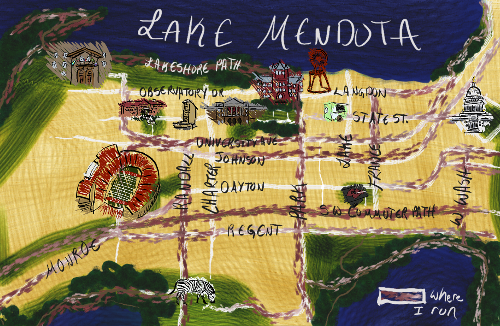

Flemish Belgium: 1933-1951
Created for the UW-Madison Cartography Lab

I originally had extensive plans for a larger educational map series about ENSO (El Niño-Southern Oscillation), but they got whittled down to this simple map. I still enjoyed making it, but at the time was disappointed about not being able to make a larger impact (map-wise). However, this little map mas made the rounds on OFDA walls and online - I continually get requests for reprints (as ENSO is clearly still affecting a lot of things, as I write this January 2016). This map for me represents how often creations can go in a completely differect direction than what you originally planned - and good reminder on why it is important to always put careful consideration into all the products I make, no matter what my original plans were (which I did and still do ;).
I also think the above link and this map are a good example of how many different uses maps can have. The map originally served as part of a decision making process for determining who, what, and where to help people (and how), but it then served as a means of communicating the situation outside of the planning sphere, and turned into a knowledge and education tool for understanding how ENSO is affecting people directly (rather than geographically and climatically, as illustrated on the map).
Created for the UW-Madison Cartography Lab
Created in order to experiment and explore the realistic paint brushes and styles within Corel Draw 12.
Created for the UW-Madison Cartography Lab

Map of the Appalachian Trail, created for the UW-Madison Cartography Lab

Created for the UW-Madison Cartography Lab